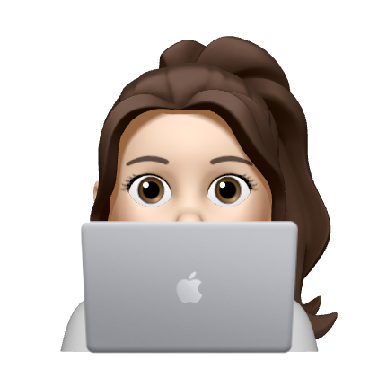

Hello, I'm yujin!
안녕하세요 wecode 26기 신유진입니다.
대학에서 수학과를 전공하면서 시작했던 아르바이트가
직업이 되어 지금까지 학원강사로 일했었습니다.
전공수업에서 컴퓨터 과목을 접하면서
개발자라는 직업에 처음 관심이 생겼고,
걱정이 앞서 미루다 보니 서서히 잊혀졌었습니다.
wecode를 알게 된 후 오래 전 잊고 있던
저의 꿈에 다시 도전 할 수 있게 되었습니다.
앞으로 저와 함께 할 회사와 다양한 사람들의
맞춤형 개발자가 되고싶습니다!